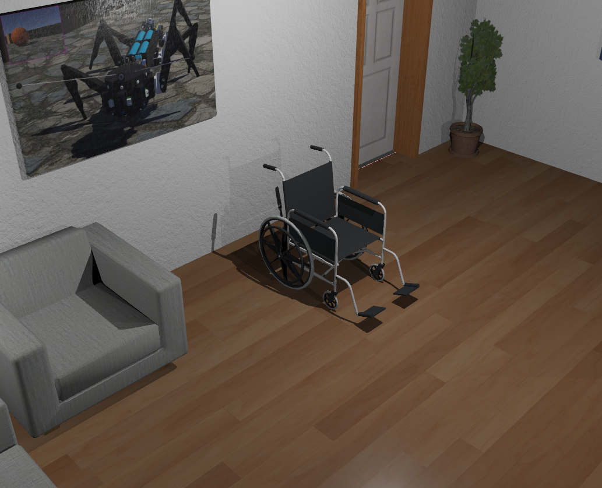

WheelChair Example¶
Introduction¶
This tutorial demonstrates how to create a simulation for a motorized wheelchair using the Webots simulator and MATLAB/Simulink for control system design. The wheelchair model includes differential drive, obstacle detection sensors, and inertial measurement for navigation.


Overview¶
| Property | Value |
|---|---|
| Type | Assistive Mobility Platform |
| Difficulty | Beginner |
| Control Method | Differential Drive / PID |
| Drive Type | Two-wheel differential |
| Sensors | IR distance, IMU, Camera |
1. Project Structure¶
wheel_chair/
├── controllers/
│ ├── simulink_control_app/
│ │ ├── simulink_control_app.m # Main MATLAB controller
│ │ ├── simulink_control.slx # Simulink control model
│ │ ├── state_space_modeling.slx # State-space model
│ │ ├── wb_motor_set_velocity.m # Motor velocity control
│ │ ├── wb_motor_set_position.m # Motor position control
│ │ ├── wb_motor_set_torque.m # Motor torque control
│ │ ├── wb_gyro_get_values.m # Gyroscope reading
│ │ ├── wb_accelerometer_get_values.m # Accelerometer reading
│ │ ├── wb_distance_sensor_get_value.m
│ │ ├── wb_inertial_unit_get_roll_pitch_yaw.m
│ │ └── wb_robot_step.m # Simulation step
│ └── wheelchair_V1_C/
│ ├── wheelchair_V1_C.c # C controller (obstacle avoidance)
│ └── Makefile
├── protos/
│ └── Wheelchair.wbo # Wheelchair model
└── worlds/
└── WheelChair.wbt # Webots world file
2. Components¶
Physical Components¶
| Component | Description |
|---|---|
| Wheels | Two drive wheels for differential steering |
| Motors | DC motors to drive each wheel independently |
| IR Sensors | Infrared distance sensors for obstacle detection |
| IMU | Inertial measurement unit (accelerometer + gyroscope) |
| Camera | Forward-facing camera for vision-based navigation |
Sensor Configuration¶
| Sensor | Webots Name | Purpose |
|---|---|---|
| Left IR Sensor | left_ir / left IR |
Left obstacle detection |
| Right IR Sensor | right_ir / right IR |
Right obstacle detection |
| Accelerometer | accelerometer |
Linear acceleration measurement |
| Gyroscope | gyro |
Angular velocity measurement |
| Inertial Unit | inertial_unit |
Roll, pitch, yaw orientation |
| Camera | camera |
Visual feedback |
Actuators¶
| Actuator | Webots Name | Control Mode |
|---|---|---|
| Left Motor | left_rotational_motor |
Velocity control |
| Right Motor | right_rotational_motor |
Velocity control |
| Left Position Sensor | left_position_sensor |
Encoder feedback |
| Right Position Sensor | right_position_sensor |
Encoder feedback |
3. Differential Drive Kinematics¶
System Block Diagram¶
flowchart TB
subgraph Reference["Reference Inputs"]
R1[/"Velocity Command<br/>(v_d, ω_d)"/]
R2[/"Joystick Input"/]
end
subgraph Control["Control System"]
subgraph HighLevel["High-Level Control"]
OA[Obstacle<br/>Avoidance]
NAV[Navigation<br/>Controller]
end
subgraph LowLevel["Low-Level Control"]
VC[Velocity<br/>Controller]
PID_L[PID Left<br/>Wheel]
PID_R[PID Right<br/>Wheel]
end
end
subgraph Sensors["Sensor Suite"]
IR_L[Left IR<br/>Sensor]
IR_R[Right IR<br/>Sensor]
IMU[IMU<br/>Accel + Gyro]
ENC[Wheel<br/>Encoders]
CAM[Camera]
end
subgraph Actuators["Drive System"]
ML[Left<br/>Motor]
MR[Right<br/>Motor]
end
subgraph Plant["WheelChair"]
WC[Differential<br/>Drive Dynamics]
end
R1 --> NAV
R2 --> NAV
IR_L --> OA
IR_R --> OA
OA --> NAV
NAV --> VC
VC --> PID_L
VC --> PID_R
PID_L --> ML
PID_R --> MR
ML --> WC
MR --> WC
WC --> IR_L
WC --> IR_R
WC --> IMU
WC --> ENC
WC --> CAM
IMU --> VC
ENC --> PID_L
ENC --> PID_R
style Reference fill:#e1f5fe
style Control fill:#e8f5e9
style Sensors fill:#f3e5f5
style Actuators fill:#ffebee
style Plant fill:#fce4ecState-Space Model Diagram¶
flowchart LR
subgraph Inputs["Control Inputs u"]
U1["v_L (Left Wheel)"]
U2["v_R (Right Wheel)"]
end
subgraph StateSpace["State-Space Model<br/>ẋ = f(x,u)"]
subgraph States["State Vector x"]
S1["x - X Position [m]"]
S2["y - Y Position [m]"]
S3["θ - Heading [rad]"]
end
end
subgraph Outputs["Outputs y"]
Y1["Position (x, y)"]
Y2["Orientation (θ)"]
end
Inputs --> StateSpace
StateSpace --> Outputs
style Inputs fill:#ffcdd2
style StateSpace fill:#c8e6c9
style Outputs fill:#bbdefbDifferential Drive Model¶
flowchart TB
subgraph DiffDrive["Differential Drive Kinematics"]
subgraph Forward["Forward Kinematics"]
F1["ẋ = v·cos(θ)"]
F2["ẏ = v·sin(θ)"]
F3["θ̇ = ω"]
end
subgraph WheelVel["Wheel-Body Velocity"]
W1["v = (v_R + v_L) / 2"]
W2["ω = (v_R - v_L) / L"]
end
subgraph Inverse["Inverse Kinematics"]
I1["v_L = v - (ω·L/2)"]
I2["v_R = v + (ω·L/2)"]
end
end
Forward --> WheelVel
WheelVel --> Inverse
style DiffDrive fill:#e8f5e9State-Space Matrices¶
%% WheelChair State-Space Model
% Nonlinear kinematic model (differential drive)
% State vector: x = [x, y, theta]'
% Input vector: u = [v, omega]'
% Physical Parameters
L = 0.5; % Wheelbase (wheel separation) [m]
r = 0.1; % Wheel radius [m]
m = 100; % Total mass (with user) [kg]
Iz = 15; % Yaw moment of inertia [kg*m^2]
% Motor parameters
tau_motor = 0.1; % Motor time constant [s]
K_motor = 10; % Motor gain
% Velocity limits (safety)
v_max = 1.5; % Maximum linear velocity [m/s]
omega_max = 1.0; % Maximum angular velocity [rad/s]
% Kinematic model (nonlinear)
% dx/dt = v * cos(theta)
% dy/dt = v * sin(theta)
% dtheta/dt = omega
% Extended state-space with velocity dynamics
% State: [x, y, theta, v, omega]'
% Input: [v_cmd, omega_cmd]'
A = [0, 0, 0, 1, 0;
0, 0, 0, 0, 0;
0, 0, 0, 0, 1;
0, 0, 0, -1/tau_motor, 0;
0, 0, 0, 0, -1/tau_motor];
B = [0, 0;
0, 0;
0, 0;
K_motor/tau_motor, 0;
0, K_motor/tau_motor];
C = [1, 0, 0, 0, 0;
0, 1, 0, 0, 0;
0, 0, 1, 0, 0];
D = zeros(3, 2);
%% Wheel velocity conversion
function [v_left, v_right] = bodyToWheel(v, omega, L)
v_left = v - omega * L / 2;
v_right = v + omega * L / 2;
end
function [v, omega] = wheelToBody(v_left, v_right, L)
v = (v_right + v_left) / 2;
omega = (v_right - v_left) / L;
end
%% Velocity saturation for safety
function [v_sat, omega_sat] = saturateVelocity(v, omega, v_max, omega_max)
v_sat = max(min(v, v_max), -v_max);
omega_sat = max(min(omega, omega_max), -omega_max);
end
Obstacle Avoidance Architecture¶
flowchart TB
subgraph ObstacleAvoid["Obstacle Avoidance System"]
subgraph Sensing["IR Sensing"]
IR_L[Left IR<br/>Sensor]
IR_R[Right IR<br/>Sensor]
THRESH["Threshold<br/>MIN_DT = 850"]
end
subgraph Decision["Decision Logic"]
DET["Obstacle<br/>Detected?"]
DIR["Direction<br/>Selection"]
end
subgraph Action["Avoidance Action"]
TURN["Turn Away"]
FWD["Continue<br/>Forward"]
end
end
IR_L --> THRESH
IR_R --> THRESH
THRESH --> DET
DET --> |Yes| DIR
DET --> |No| FWD
DIR --> |"LIR > RIR"| TURN
DIR --> |"LIR < RIR"| TURN
style ObstacleAvoid fill:#fff3e0Velocity Control Loop¶
flowchart TB
subgraph VelocityControl["Velocity Control System"]
subgraph Linear["Linear Velocity"]
V_D[/"v_d"/]
V[/"v_actual"/]
ERR_V((+<br/>-))
PID_V[PID<br/>Kp=1.0, Ki=0.1, Kd=0.05]
end
subgraph Angular["Angular Velocity"]
W_D[/"ω_d"/]
W[/"ω_actual"/]
ERR_W((+<br/>-))
PID_W[PID<br/>Kp=1.0, Ki=0.1, Kd=0.05]
end
end
subgraph WheelConvert["Wheel Velocity Conversion"]
CONV["v_L = v - ωL/2<br/>v_R = v + ωL/2"]
end
V_D --> ERR_V
V --> ERR_V
ERR_V --> PID_V
W_D --> ERR_W
W --> ERR_W
ERR_W --> PID_W
PID_V --> CONV
PID_W --> CONV
style VelocityControl fill:#e3f2fd
style WheelConvert fill:#fff8e1Sensor Filtering¶
flowchart LR
subgraph Filtering["Sensor Filtering"]
subgraph LowPass["Low-Pass Filter (IMU)"]
RAW_IMU["Raw IMU"]
ALPHA["α = 0.85"]
FILT_IMU["filtered = α·new + (1-α)·old"]
end
subgraph MovingAvg["Moving Average (IR)"]
RAW_IR["Raw IR"]
BUFFER["Buffer[5]"]
AVG_IR["filtered = mean(buffer)"]
end
end
RAW_IMU --> ALPHA
ALPHA --> FILT_IMU
RAW_IR --> BUFFER
BUFFER --> AVG_IR
style Filtering fill:#f3e5f5Motion Equations¶
For a differential drive robot:
v = (v_R + v_L) / 2 # Linear velocity
ω = (v_R - v_L) / L # Angular velocity
where:
v_R = right wheel velocity
v_L = left wheel velocity
L = wheelbase (distance between wheels)
Wheel Velocities from Desired Motion¶
4. Control System Design¶
Design Considerations¶
To design a control system for the wheelchair, consider:
- System Dynamics: Model the non-linear behavior including motor dynamics and friction
- Available Sensors: IR distance sensors, accelerometer, gyroscope, and encoders
- Desired Behavior: Forward motion, turning, obstacle avoidance
- Physical Constraints: Motor limits, wheelchair dimensions, safety requirements
PID Control¶
PID control provides a balance between stability and responsiveness:
% PID controller for velocity tracking
Kp = 1.0; % Proportional gain
Ki = 0.1; % Integral gain
Kd = 0.05; % Derivative gain
error = desired_velocity - actual_velocity;
integral = integral + error * dt;
derivative = (error - prev_error) / dt;
control_output = Kp * error + Ki * integral + Kd * derivative;
5. Controller Implementations¶
MATLAB/Simulink Controller¶
% simulink_control_app.m - Initialization
TIME_STEP = 16;
alpha_pitch = 0.85; % Low-pass filter coefficient
% Initialize sensors
accelerometer_sensor = wb_robot_get_device('accelerometer');
wb_accelerometer_enable(accelerometer_sensor, TIME_STEP);
gyro_sensor = wb_robot_get_device('gyro');
wb_gyro_enable(gyro_sensor, TIME_STEP);
left_IR = wb_robot_get_device('left_ir');
right_IR = wb_robot_get_device('right_ir');
wb_distance_sensor_enable(left_IR, TIME_STEP);
wb_distance_sensor_enable(right_IR, TIME_STEP);
inertial_unit = wb_robot_get_device('inertial_unit');
wb_inertial_unit_enable(inertial_unit, TIME_STEP);
% Initialize motors
left_position_sensor = wb_robot_get_device('left_position_sensor');
left_rotational_motor = wb_robot_get_device('left_rotational_motor');
right_position_sensor = wb_robot_get_device('right_position_sensor');
right_rotational_motor = wb_robot_get_device('right_rotational_motor');
% Load Simulink model
open_system('simulink_control');
load_system('simulink_control');
C Controller (Obstacle Avoidance)¶
The C controller implements basic obstacle avoidance:
#define MAX_SP 4 // Maximum speed
#define MIN_DT 850 // Minimum distance threshold
int Obstacle_Detection(void) {
int go_turn = 0;
int LIR = wb_distance_sensor_get_value(left_IR);
int RIR = wb_distance_sensor_get_value(right_IR);
if (LIR < MIN_DT || RIR < MIN_DT)
go_turn = 1;
if (LIR > RIR)
go_turn *= -1;
return go_turn;
}
void Set_Direction(void) {
if (turn == 0) {
turn = Obstacle_Detection();
} else {
// Execute turn
left_speed = MAX_SP * turn;
right_speed = -MAX_SP * turn;
// ... timing logic
}
wb_motor_set_velocity(left_motor, left_speed);
wb_motor_set_velocity(right_motor, right_speed);
}
6. Control System Design Process¶
Step 1: Define Desired Behavior¶
- Moving forward at constant speed
- Turning left/right on command
- Automatic obstacle avoidance
- Smooth acceleration/deceleration
Step 2: Identify System Constraints¶
- Motor maximum velocity and torque
- Sensor range and accuracy
- Physical dimensions affecting turning radius
- Safety requirements (maximum speed)
Step 3: Implement Control Laws¶
Using PID control for smooth motion:
% Main control loop
while wb_robot_step(TIME_STEP) ~= -1
% Read sensors
left_dist = wb_distance_sensor_get_value(left_IR);
right_dist = wb_distance_sensor_get_value(right_IR);
orientation = wb_inertial_unit_get_roll_pitch_yaw(inertial_unit);
% Obstacle avoidance
if left_dist < threshold || right_dist < threshold
% Execute avoidance maneuver
[v_left, v_right] = avoid_obstacle(left_dist, right_dist);
else
% Normal operation
[v_left, v_right] = compute_velocities(desired_v, desired_omega);
end
% Apply motor commands
wb_motor_set_velocity(left_motor, v_left);
wb_motor_set_velocity(right_motor, v_right);
end
Step 4: Evaluate Performance¶
Metrics to measure: - Tracking error (position and velocity) - Response time to obstacles - Smoothness of motion (jerk minimization) - Energy efficiency
Step 5: Optimize and Tune¶
- Adjust PID gains for desired response
- Use simulation to test edge cases
- Validate with real-world constraints
7. Quick Start¶
-
Open Webots and load
examples/wheel_chair/worlds/WheelChair.wbt -
Select controller:
simulink_control_appfor MATLAB/Simulink control-
wheelchair_V1_Cfor C-based obstacle avoidance -
Run the simulation
-
Observe behavior:
- Wheelchair navigates environment
- Avoids obstacles using IR sensors
- Maintains stable motion
8. Example Control Modes¶
Basic Manual Control¶
- Direct velocity commands to left and right motors
- Joystick-style interface
Automatic Navigation¶
- Goal-seeking behavior
- Path planning integration
- Waypoint following
Joystick Interface Integration¶
- Map joystick inputs to wheel velocities
- Apply velocity limits and smoothing
- Dead-zone handling for precision control
9. Sensor Filtering¶
Low-Pass Filter for IMU Data¶
% Filter coefficients
alpha = 0.85;
% Apply filter
filtered_pitch = alpha * new_pitch + (1 - alpha) * old_pitch;
filtered_roll = alpha * new_roll + (1 - alpha) * old_roll;
Distance Sensor Smoothing¶
% Moving average filter
window_size = 5;
distance_buffer = circshift(distance_buffer, 1);
distance_buffer(1) = new_reading;
filtered_distance = mean(distance_buffer);
10. Safety Considerations¶
- Speed Limits: Enforce maximum velocity for user safety
- Emergency Stop: Implement immediate stop functionality
- Obstacle Detection: Redundant sensors for reliability
- Smooth Control: Avoid sudden accelerations
- Battery Monitoring: Track power levels
References¶
- DrakerDG Webots Projects - Original wheelchair model
- Webots Documentation - Differential Wheels
- MathWorks - Mobile Robot Kinematics